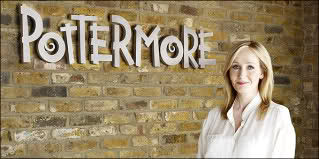

Joanne Kathleen Rowling, famosa por escribir los libros de la Saga de "Harry Potter" nació el 31 de julio de 1965 en Yate, Gloucestershire, Inglaterra.
Hija de Peter James Rowling, un ingeniero aeronáutico de Rolls-Royce, y de Anne Volant, científica.
Asistió a la St Michael's Primary School.
Cursó estudios en la escuela secundaria Wyedean School and College, donde su madre trabajaba en el departamento de ciencias
Un viaje en tren entre Manchester y Londres que se prolongó durante cuatro horas más por avería de la máquina, sirvió para crear Harry Potter,
aprendiz de mago más famoso desde Grillo, el pupilo de Merlín.
Se terminó de materializar en 1995 desde una mesita del café Nicholson de Edimburgo.
Los editores rechazan el original hasta en nueve ocasiones.
De hecho, la convencen además para que firme con sus iniciales por que consideraban que los niños no comprarían un libro escrito por una mujer.
Añadió la K. en honor de su abuela paterna, Kathleen.
Una editorial de Bloomsbury acepta publicar su primera obra sin adivinar que tendría tanto éxito.
Al principio, no se hizo ningún intento de promocionar el libro e imprimió sólo un reducido número de ejemplares.
Consiguió incluir su obra infantil en la lista de las más vendidas deThe New York Times, un hecho sin precedentes.
En 2007, tras la publicación del séptimo y último libro de la serie, Harry Potter y las Reliquias de la Muerte, Bloomsbury organizó un concurso y los mil admiradores que ganaron pudieron presenciar a Rowling leyendo las primeras páginas del libro en el Museo de Historia Natural de Londres. Antes de publicar pasó por graves estrecheces económicas, pero se convirtió en la tercera mujer más rica del Reino Unido.
Los elogios de la crítica, la convirtieron en un nuevo clásico.